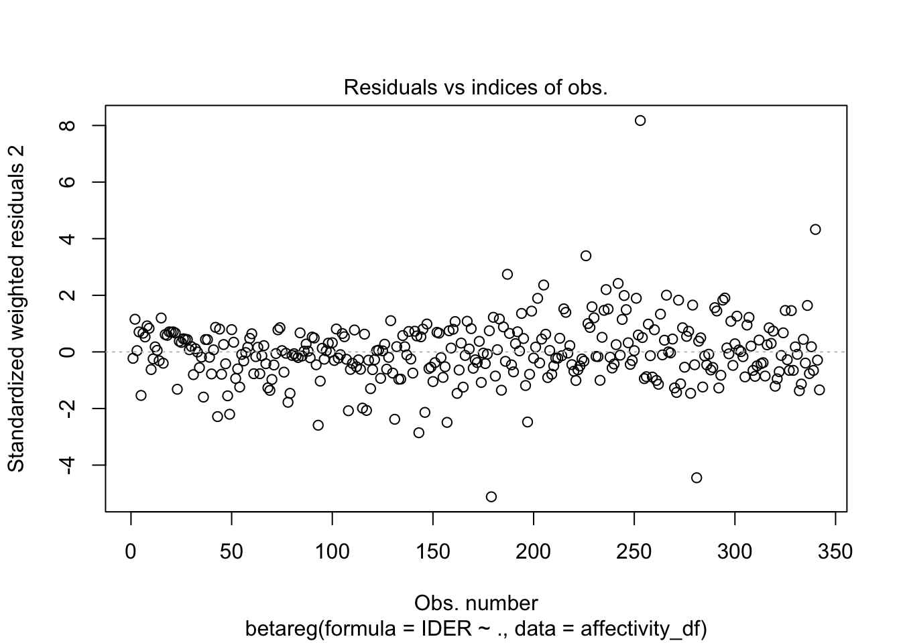
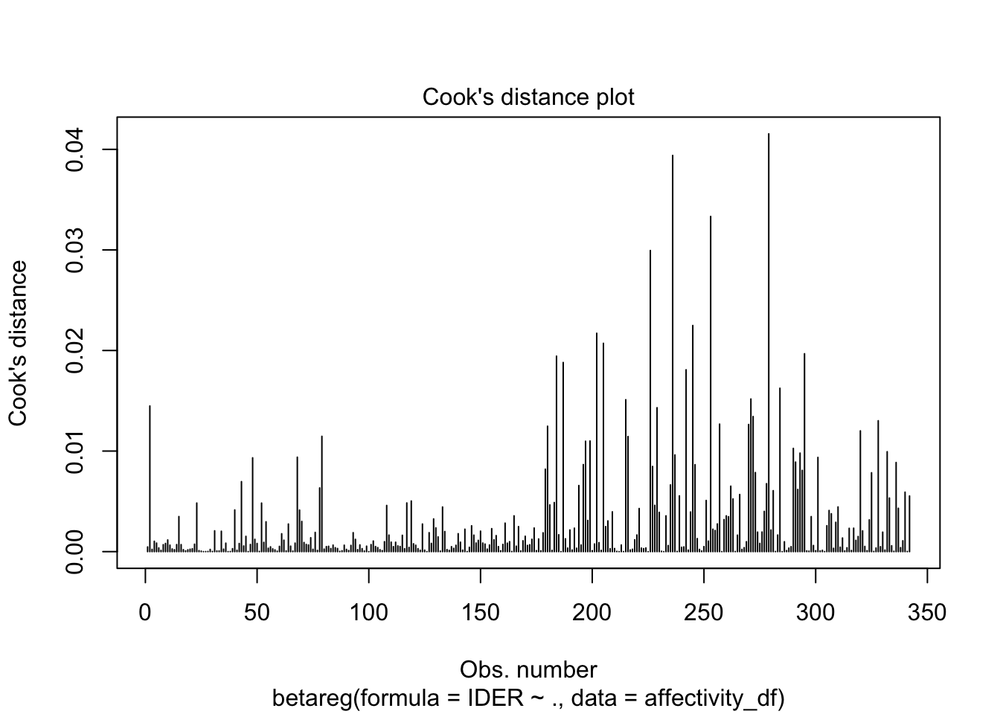
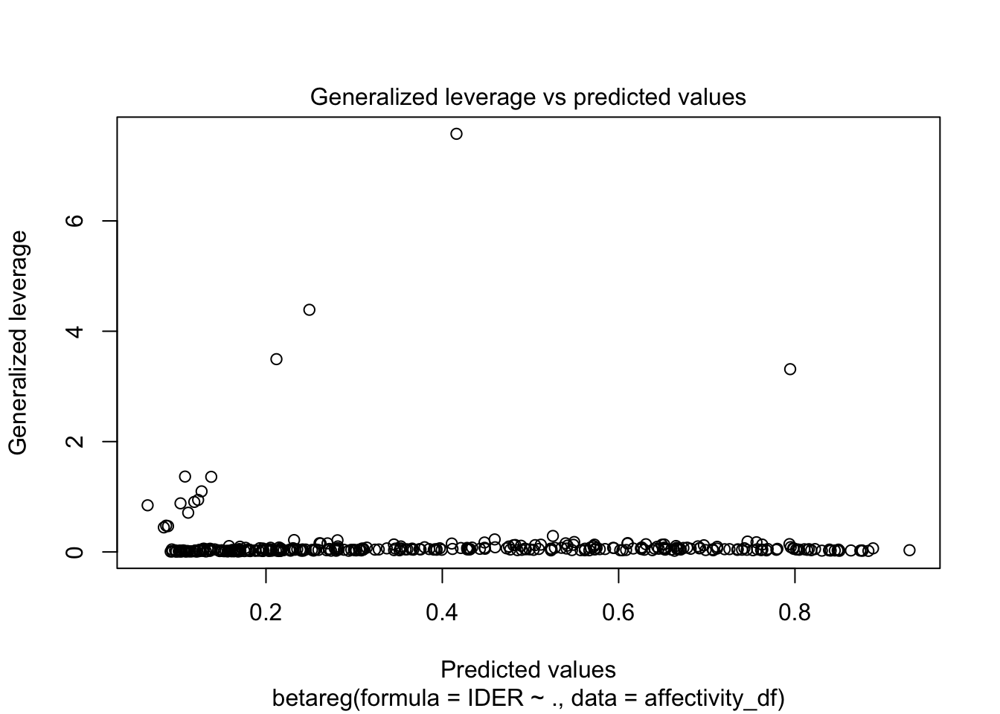
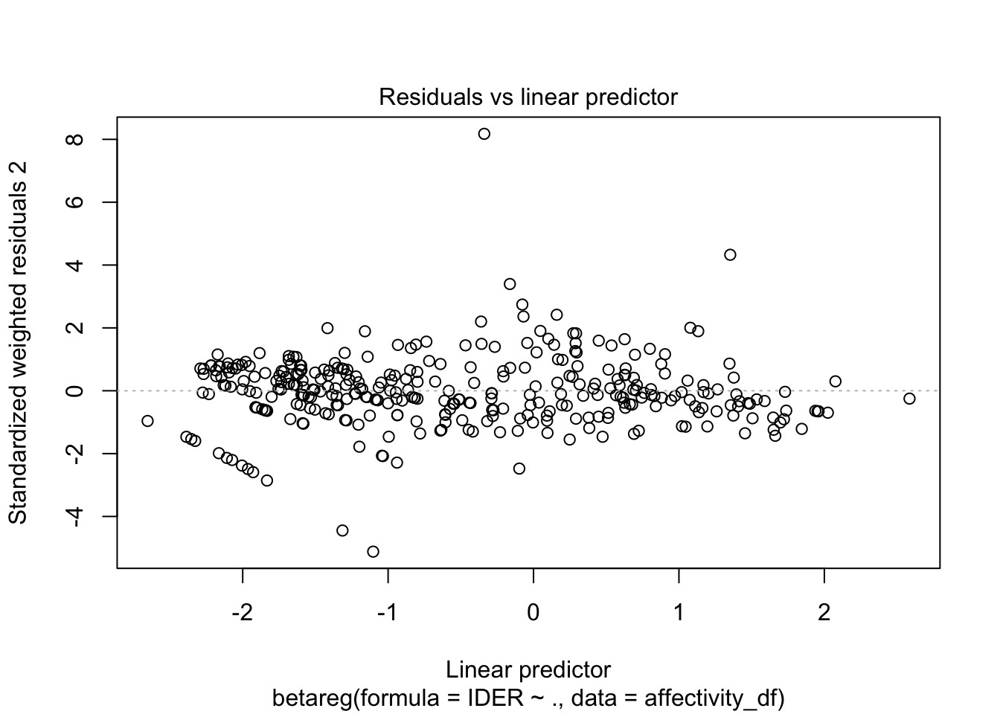

affectivity_data_df <-read_excel("data/Psico_New.xlsx")Beta-Regression Code for Negative Affect Using Tree-Based Models to Identify Factors Contributing to Trait Negative Affect in Adults with and without Major Depression Manuscript
Loading the data
Wrangle data
rename_binary <- function(x) {
return(
case_when(
x == 1 ~ " Yes",
x == 0 ~ "No"
)
)
}
demographics_df <-
affectivity_data_df %>%
select(
Age = EDAD,
`Disconnection and Rejection` = DYRYSQ,
`Impaired Autonomy` = PADYSQ,
`Impaired Limits` =LIYSQ,
`Other-Directedness` = THOYSQ,
`Over-Vigilance/Inhibition` = SEIYSQ,
`IDER Score` = IDERR_total,
`Number of Stressful Events` = ESVfrec,
Sex = SEXO,
`Negative Attribution` = dummyPosNeg,
`Unexpected Attribution` = dummyEsInes,
`Out of Control Attribution` = dummyConNocon,
`Childhood Adversity` = ABUSOINFANCIA,
`Physical Excercise` = deporte,
`Smoking Cigarettes` = fuma,
`Alcohol Use` = Alcohol,
`Psychoactive Substance Use` = psicoactiva
) %>%
mutate(across(Sex:`Psychoactive Substance Use`, factor)) %>%
mutate(
Sex = case_when(
Sex == 1 ~ "Female",
Sex == 0 ~ "Male"
)
) %>%
mutate_at(
vars(
`Negative Attribution`:`Psychoactive Substance Use`),
~ rename_binary(.)) Beta Regression
# I have to transform the outcome to be from 0 to 1 given that it is a score that only goes from 10 to 40, it is bounded. This function was created by Dr. Gabriel Odom. Please find the documentation in script named liker_squeezer_202303314
Squeeze <- function(xBdd, lower, upper, squeeze = 0.5) {
N <- length(xBdd)
x1 <- (xBdd - lower) / (upper - lower)
x2 <- (x1 * (N - 1) + squeeze) / N
x2
}
# Transforming the variable
affectivity_df <- demographics_df %>%
mutate(IDER = Squeeze(
xBdd = demographics_df$`IDER Score`,
lower = 10L, upper = 40L
)
) %>%
select(-`IDER Score`)beta_fit <- betareg(IDER ~ ., data = affectivity_df)
summary_beta <- summary(beta_fit)
conf_ints <- confint(beta_fit, level = 0.95)
summary_beta
Call:
betareg(formula = IDER ~ ., data = affectivity_df)
Standardized weighted residuals 2:
Min 1Q Median 3Q Max
-5.1191 -0.6067 -0.0607 0.5938 8.1760
Coefficients (mean model with logit link):
Estimate Std. Error z value Pr(>|z|)
(Intercept) -1.8240348 0.3952193 -4.615 3.93e-06 ***
Age -0.0103167 0.0040793 -2.529 0.011437 *
`Disconnection and Rejection` 0.0636254 0.0164024 3.879 0.000105 ***
`Impaired Autonomy` 0.0798309 0.0163999 4.868 1.13e-06 ***
`Impaired Limits` 0.0192334 0.0125646 1.531 0.125827
`Other-Directedness` 0.0009408 0.0123753 0.076 0.939404
`Over-Vigilance/Inhibition` 0.0006187 0.0131395 0.047 0.962443
`Number of Stressful Events` -0.0015294 0.0056149 -0.272 0.785324
SexMale 0.0718595 0.1009377 0.712 0.476515
`Negative Attribution`No -0.4110667 0.1167578 -3.521 0.000430 ***
`Unexpected Attribution`No 0.0432397 0.1031468 0.419 0.675066
`Out of Control Attribution`No -0.2971213 0.1176300 -2.526 0.011540 *
`Childhood Adversity`No -0.3363619 0.0936297 -3.592 0.000328 ***
`Physical Excercise`No 0.0268285 0.0931060 0.288 0.773232
`Smoking Cigarettes`No -0.2852899 0.1168429 -2.442 0.014620 *
`Alcohol Use`No -0.0487717 0.1295649 -0.376 0.706599
`Psychoactive Substance Use`No 0.3603303 0.2592901 1.390 0.164626
Phi coefficients (precision model with identity link):
Estimate Std. Error z value Pr(>|z|)
(phi) 6.4487 0.4811 13.4 <2e-16 ***
---
Signif. codes: 0 '***' 0.001 '**' 0.01 '*' 0.05 '.' 0.1 ' ' 1
Type of estimator: ML (maximum likelihood)
Log-likelihood: 218 on 18 Df
Pseudo R-squared: 0.5962
Number of iterations: 29 (BFGS) + 3 (Fisher scoring) conf_ints 2.5 % 97.5 %
(Intercept) -2.598650394 -1.049419131
Age -0.018311876 -0.002321489
`Disconnection and Rejection` 0.031477291 0.095773531
`Impaired Autonomy` 0.047687772 0.111974091
`Impaired Limits` -0.005392666 0.043859555
`Other-Directedness` -0.023314308 0.025195828
`Over-Vigilance/Inhibition` -0.025134309 0.026371727
`Number of Stressful Events` -0.012534449 0.009475585
SexMale -0.125974700 0.269693734
`Negative Attribution`No -0.639907810 -0.182225689
`Unexpected Attribution`No -0.158924334 0.245403764
`Out of Control Attribution`No -0.527671924 -0.066570680
`Childhood Adversity`No -0.519872732 -0.152851007
`Physical Excercise`No -0.155655864 0.209312815
`Smoking Cigarettes`No -0.514297733 -0.056282021
`Alcohol Use`No -0.302714239 0.205170750
`Psychoactive Substance Use`No -0.147869000 0.868529629
(phi) 5.505800302 7.391676278plot(beta_fit)



vif(beta_fit) Age `Disconnection and Rejection`
1.235624 4.927414
`Impaired Autonomy` `Impaired Limits`
3.985481 2.564155
`Other-Directedness` `Over-Vigilance/Inhibition`
2.426282 1.957390
`Number of Stressful Events` Sex
1.269538 1.094951
`Negative Attribution` `Unexpected Attribution`
1.722457 1.412952
`Out of Control Attribution` `Childhood Adversity`
1.275194 1.117944
`Physical Excercise` `Smoking Cigarettes`
1.101797 1.194950
`Alcohol Use` `Psychoactive Substance Use`
1.200714 1.188520 tab_model(beta_fit,
title = "Table 3 Beta Regression for the IDER Score in a Sample of
342 Depressed and Non-depressed Adults")| IDER | |||
|---|---|---|---|
| Predictors | Estimates | CI | p |
| (Intercept) | 0.16 | 0.07 – 0.35 | <0.001 |
| Age | 0.99 | 0.98 – 1.00 | 0.011 |
| Disconnection and Rejection |
1.07 | 1.03 – 1.10 | <0.001 |
| Impaired Autonomy | 1.08 | 1.05 – 1.12 | <0.001 |
| Impaired Limits | 1.02 | 0.99 – 1.04 | 0.126 |
| Other-Directedness | 1.00 | 0.98 – 1.03 | 0.939 |
| Over-Vigilance/Inhibition | 1.00 | 0.98 – 1.03 | 0.962 |
| Number of Stressful Events |
1.00 | 0.99 – 1.01 | 0.785 |
| Sex [Male] | 1.07 | 0.88 – 1.31 | 0.477 |
| Negative Attribution [No] | 0.66 | 0.53 – 0.83 | <0.001 |
| Unexpected Attribution [No] |
1.04 | 0.85 – 1.28 | 0.675 |
| Out of Control Attribution [No] |
0.74 | 0.59 – 0.94 | 0.012 |
| Childhood Adversity [No] | 0.71 | 0.59 – 0.86 | <0.001 |
| Physical Excercise [No] | 1.03 | 0.86 – 1.23 | 0.773 |
| Smoking Cigarettes [No] | 0.75 | 0.60 – 0.95 | 0.015 |
| Alcohol Use [No] | 0.95 | 0.74 – 1.23 | 0.707 |
| Psychoactive Substance Use [No] |
1.43 | 0.86 – 2.38 | 0.165 |
| Observations | 342 | ||
| R2 | 0.596 | ||